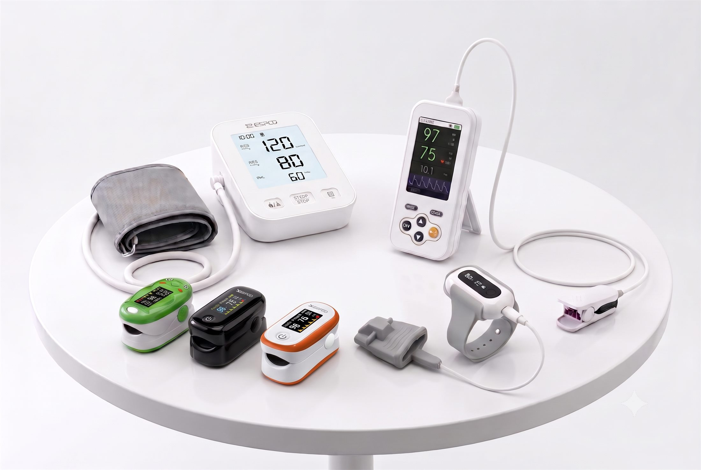
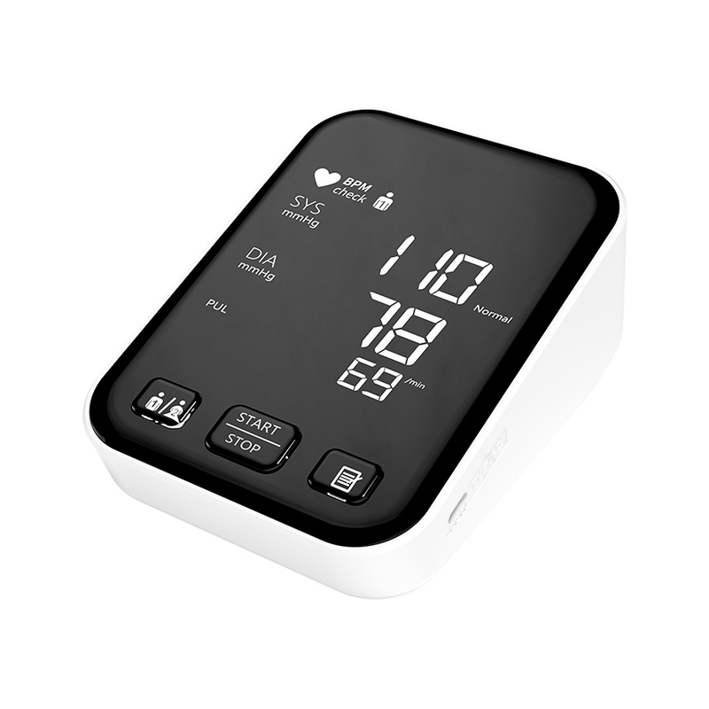
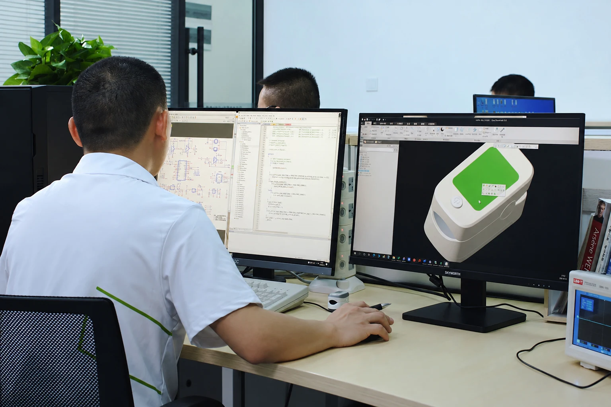
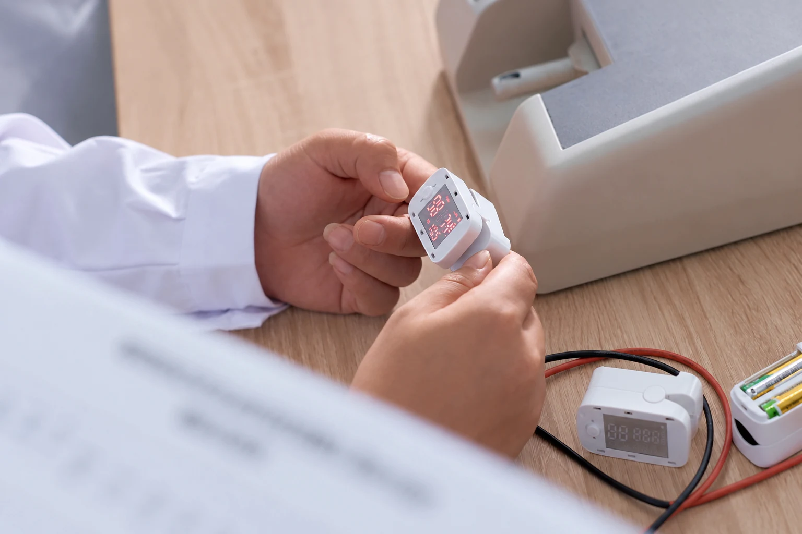

Medical Device
OEM & ODM
Manufacturer
Built around your brand.
Pulse oximeters, blood pressure monitors and product development for overseas medical brands and distributors.
Medical device quality management system

Explore the YimiLife product rangeFind your product family.
Start with a product family, compare model configurations and share your target market and customization needs.

Pulse Oximeter
↗Fingertip · Handheld

Blood Pressure Monitor
↗Upper-arm · LED / LCD displays

Wearable Monitoring Devices
↗Pulse oximeter watches
Nebulizers
↗Compressor · Handheld mesh
Temperature Monitoring
↗Forehead thermometers · Temperature patches · Rapid thermometers (future product)
A team behind
your product.
YimiLife is a B2B medical device manufacturer serving overseas healthcare brands, distributors and OEM/ODM customers.
Founded in 2017 in Shenzhen, we bring together in-house product development and manufacturing, with a focus on well-designed products at competitive prices.
About YimiLife →
Inside our development work.

People, facilities & experience.
Our in-house R&D team is responsible for end-to-end product development across the YimiLife portfolio.
Explore our R&D capabilities →

See how your product
is made.
Explore our production and assembly environment, inspection activities and quality-management information.
An example of
OEM customization.
View full demo ↗
Pulse oximeter customization demo.
Define your brief.
Share your target market, preferred model and branding requirements.
Review the options.
This illustration shows device branding, packaging, a manual and labels for discussion.
Agree the scope.
Discuss the model, documentation needs and customization scope before planning samples.
Illustrative customization example. Final options are assessed for each model and project.